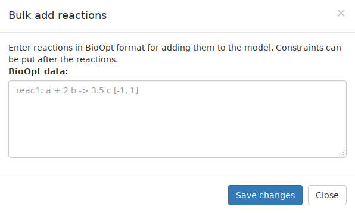

Table of Contents
WeDesign is an online tool to carry out genome-scale metabolic analysis of several organisms. In this guide its main features will be explained.
Introduction to WeDesign
Guests
If you are a guest you will see a listing of models and a notification that permanent changes to a model are not possible.
Registered User
If you are a registered user you will see an empty listing instead. To add your first model select "Create new model" and a dropdown menu will offer two options: "Upload your own model" and "Create from template". Here you can either add from a template (these are the same models offered to guest users) or upload your own BioOpt or SBML file.
After adding the new model the table will contain your new model.
Both
For each model in the list four different actions are possible:
- Edit (Click the name of the model)
- View Revisions
- Export Model
- Delete Model (Registered only)
For "Edit" see "Working with a model".
Revisions: WeDesign keeps old versions of each model when the model is saved while in edit mode. In the Revision view you can edit older versions of the model and rollback to these versions by using the save button. The changes ("Show changes") is autogenerated based on the changes between the versions and can be inaccurate.
Export Model: This exports the model either in BioOpt or in SBML format. ''Note:'' Because WeDesign applies internal processing to the model the exported file can differ significantly from the uploaded model.
Delete Model: This deletes the model. This action is not reversable, WeDesign won't keep any data related to the model.
Working with a model
After the initial loading sequence the model is displayed in a table similiar to the model overview.
For this guide we will use "iSyn811" as an example.
The model editor provides four different views: Reactions, Metabolites, Settings and Simulation.
- Reactions lists all the reactions available in the model.
- Metabolites lists all metabolites available in the model
- Settings allows to alter the way how simulations are executed
- Simulation starts simulations on the current model based on the specified settings

Reactions
Lets take a look at the reaction 2.7.1.2a of the iSyn811 model. You can use the search box to find it easier because all reactions are sorted alphabetically in the table.
The 1st column contains the reaction name: This is the identifier for the reaction, for iSyn811 these are in most cases the corresponding EC number. Other models use other conventions. When you click the name a reaction editor opens. The reaction editor is explained #below.
- The 2nd column contains a representation of the chemical reaction:
- The substrates are left of the arrow and are the reactive compounds to be transformed, including the stoichiometry coefficient.
- The products are right of the arrow and are the Compounds obtained in the reaction.
- Reversibility: One arrow implies substrates to be transformed into products, but two arrows mean that substrates and products can be created from each other.
The 3rd column shows the flux constraints: This range indicates the flux restriction in terms of the minimum and maximum value allowed for each flux (For iSyn811 the units are mmol·gDW-1·h-1, with the exception of biomass formation, which is expressed in h-1).
- As it appears in Figure 5, fluxes can be either:
- unconstrained, being allowed to take any flux value [-∞,∞] (Protons),
- restricted to no flux [0,0] or equivalently as unselected reaction by unticking it (Urea),
- allowed to a specific range of fluxes for reversible reactions [-104,104] (Sulfate),
- allowed to a specific range of fluxes for non-reversible reactions [0,1000] (Nitrate),
- fixed to a given value [10,10] (Ammonia).
Note that a flux restrictions range of e.g. [-10, 20] implies that the reaction can happen in the direction of substrates to products with a maximum flux of 20 units while the conversion of the products into substrates just with a maximum flux of 10. This restriction allows any flux value within the imposed range, including a net flux of zero units, which in that case would mean that the conversion of substrates into products and vice versa occur at the same rate. The final value for each reaction flux will be finally determined by the simulation.
The 4th column shows a checkbox icon which allows to enable or disable this reaction (knockin/-out). This is equivalent to restricting a flux to [0, 0]
The 5th column allows you to delete a specific reaction. This operation can not be reversed, use the knockout function to temporarely disable reactions. When you select delete you are asked if you want to remove unused metabolites. Not removing the metabolites has no side-effect on the simulation, it is just for keeping the metabolite list clean.
Creating/Editing reactions
When you select "Create New Reaction" or click on a reaction name in the table an editor window opens.
WeDesign allows modifying the name of the reaction, the stoichiometry coefficients of each substrate and product, adding or deleting of compounds, marking the reaction as reversible or including its flux constraint. Simply start typing into the substrates/products text field and CyanoFactory will suggest metabolites based on your input. To change the coefficients click on the metabolite.
Creating of new metabolites is not possible in this view. You have to create them with " "#Create Metabolite" beforehand.
For creating multiple reactions at once we recommend using the "Batch create" functionality described below.
Batch creating of reactions
To reach this function click on the arrow next to "Create reaction" and then "Bulk create reactions".
The batch create option allows you to paste reactions in BioOpt format and it will automatically create all reactions and new metabolites for you.
- The BioOpt format is:
- reaction name : 2 substrate_1 + substrate_2 -> product_1 + 2 product_2
Each line starts with the reaction name followed by a ":". On the left side of the arrow "->" you can put substrates delimited by +. In front of the substrates is the quantity which can be omitted for a quantity of "1". Right to the arrow are the products which follow the same rules as the substrates. To make a reaction reversible use "<->" as the arrow.
A summary below the text box will show how WeDesign parsed the string. If the parsing looks correct click "Create reactions" to close the window and return to the editor.
Filter
- The reaction list can be filtered using three different predicates:
- Active/Inactive: Only show reactions that are enabled/disabled
- Constraint/Unconstrained: Only show reactions whose fluxes are constraint or unconstrained.
- Reversible/Irreversible: Only show reactions that are reversible (<->) or irreversible (->)
Search function
The search function does a full text search over the whole reaction (including metabolites) and allows filtering of entries which contain the provided text.
For more advanced searching and filtering enable "Search with RegExp" which will find entries based on whether a regular expression matches. Please consult a guide about regular expressions for usage.
Metabolites
This view lists all metabolites that are used in the reactions. Here you can rename metabolites or mark them as external by clicking the checkbox in the 4nd column.
The 2nd and the 3rd column show in which reactions the metabolites are consumed as a substrate or produced as a product. You can click the reaction names to open the reaction editor directly.
Filter
The metabolite list can be filtered based on "Is internal" and "Is external" and will only show internal or external metabolites respectively.

Search function
The search function does a full text search over the whole metabolite list and the reaction names in the consumed/produced columns and allows filtering of entries which contain the provided text.
For more advanced searching and filtering enable "Search with RegExp" which will find entries based on whether a regular expression matches. Please consult a guide about regular expressions for usage.
Creating/Editing metabolites
When you select "Create New Metabolite" or click on a metabolite name in the table an editor window opens.
WeDesign allows modifying the name of the metabolite and marking it as external.
Deleting metabolites
Deleting of a metabolite is not possible when a metabolite is in use by a reaction. When metabolites are unused you can click "Delete unused metabolites" to remove all of them at once.
Settings and Simulation
After having made all required changes to the model we can proceed with the configuration of the simulation.
WeDesign permits to simulate through the Flux Balance Analysis method all reaction fluxes in order to maximize or minimize the flux of a specific reaction.
- The tool provides three simulation types:
- Flux Balance Analysis (FBA)
- Metabolic Burden Analysis (MBA)
- Sensitivity Analysis (SA)
MBA and SA are two specific applications of FBA and will be explained later.
For each of these three simulation types a "Main Objective" which is being optimized must be selected. By default this is usually the Growth function.
Flux Balance Analysis (FBA)
Flux Balance Analysis will Maximize or Minimize the objective function using linear programming and a graph (reactions as edges, metabolites as nodes) showing the calculated fluxes of all reactions will be displayed.
Due to the slowness of the graph algorithm the graph will only show the 30 reactions with the highest flux which are connected with the objective. To change this behaviour enable the option "Display selected reactions" and manually pick the reactions you are interested in.
Case Study
Toy Model
Introduction
This model pretends to be the first hands-on experience to understand and simulate genome-scale metabolic models. The model is fictitious and simple in order to make the whole process easier. It consists of 7 reactions and 8 metabolites, among them being three external ones, which are A(ext), D(ext) and E(ext).

- For selecting the toy model, we:
- As a guest: Select "Toy Model" from the model list
- As a registred user: Select "Create New Model -> From Template" and choose "Toy Model".
Optimisation of one metabolite production
We can now simulate the set of fluxes that maximise the output of reaction 5 by increating the production of metabolite D. Please remember that in FBA simulations, there is always the need of a transport reaction that makes an intracellular compound to become extracellular, if you want to optimise its flux.
For maximising that reaction, we first constrain reaction 1, the uptake reaction for metabolite A, within the flux range [0, 1] and simulate optimising reaction 5, setting this as Main Objective.
The uptake of metabolite E is constrained to [0, 3] units. As we can see in the results image, this uptake flux directly maximises the output of D, so the algorithm takes the maximum flux for E(ext) to maximise D(ext). On the other side A(ext) is also contributing to maximise D(ext), so the maximum allowed metabolite A(ext) uptake flux is used.
We will repeat the simulation at this moment but changing the maximum flux value for A(ext) uptake from 1 to 10 and simulate again:

The results show that now the main flux contribution to D(ext) comes from the metabolic pathway involving A(ext).
TASK: Try now to constrain now both A(ext) and E(ext) uptake reactions to 1 unit and analyse the results. If we obviate energetic and kinetic properties, which metabolite is more suitable for producing D in the cell?
Optimisation of the production of two metabolites
The next exercise consists of modifying the metabolic network by adding the following reactions:
reac8: E + B -> 2 F reac9: F -> F ext
Use the bulk add functionality to add them quickly.
We will use now Metabolic Burden Analysis: We will maximise now the flux of F(ext), setting it as Design Objective, by fixing the flux of D(ext) to different values: 0, 5, 10, 15 and 20 units (that is D(ext) = [0,0], [5,5]...) and simulate for each of the given D(ext) fluxes. For this, you will need to set first the constraints for both uptake reactions related to A(ext) and E(ext) to 10 units. After having done these 5 simulations and plotting the results of the fluxes for D(ext) and F(ext) together, the following graph can be obtained:
D(ext) flux Figure 13. Results plot for several simulations of D(ext) and F(ext) fluxes Do it by yourself and try to understand why when D(ext) flux is equal or greater than 15 units, no F(Ext) metabolite can be produced in the cell.
iSyn811 model
Introduction
After having had the first contact with metabolic models, we will go ahead with a genome-scale metabolic model of the cyanobacterium Synechocystis sp. PCC 6803 [Montagud et al., BMC Systems Biology 2010, 4:156], that includes more than 800 metabolic reactions.
- After creating the model from the template or accessing as a guest you can click the "Export" button to download the iSyn811 model as a txt file (you can use this file to upload the model, too). Take a look to its content, specially paying special attention to the metabolic pathways structures. Further it is worth to remark that there are three types of reactions in this model:
- uptake reactions, which are normally constrained but can be also unconstrained,
- normal metabolic reactions and
- the biomass equation, which is a set of macromolecules that build the cell structure:
As it can be seen in the figure, the biomass equation is composed by a selection of building blocks to give one unit of biomass (BM) that is transformed into external biomass, also called cell growth (BM out), by the next reaction in the model. The external metabolites that need to be uptaken for the cell metabolism are easy to find as their corresponding uptake reactions appear just after the biomass equation and all external metabolites are displayed with blue colour in WeDesign.
The units of this model are the following:
| . | Growth | Rest of reactions |
| FLUX UNITS | h−1 | mmol ⁄ gDCW · h |
Simulation of several growing conditions
For the first exercise we will mainly study the cellular growth at three different growth modes, whose corresponding environmental conditions are given in the table:
| . | . | HETEROTROPHIC | AUTOTROPHIC | MIXOTROPHIC | |||
|---|---|---|---|---|---|---|---|
| . | Reaction name | min | max | min | max | min | max |
| Photon uptake at PSI | _lightI | 0 | 0 | 0 | 23.48 | 0 | 23.48 |
| Photon uptake at PSII | _lightII | 0 | 0 | 0 | 23.48 | 0 | 23.48 |
| CO2 uptake | CO2in | 0 | 0 | 0 | 1.7 | 0 | 1.7 |
| H2CO3 uptake | _H2CO3transport | 0 | 0 | 0 | 1.7 | 0 | 1.7 |
| Glucose uptake | TRANS-RXN59G-152 | 0 | 0.567 | 0 | 23.48 | 0 | 0.567 |
| Rubisco carboxilase | 4.1.1.39 | 0 | 0 | unbound | unbound | unbound | unbound |
Table: Initial conditions for growth modes in Synechocystis sp. PCC 6803 glucose tolerant strain
Try to set the constraints from the table and check the resultant growth (reaction _Growth set as Main objective). Note that the constraints have been adjusted to produce similar growth values in the three different scenarios. The carbon intake is equivalent in terms of C atoms. Also, the amount of photons entering the cell were obtained as the minimum necessary to reduce the carbon intake in the autotrophic scenario [Montagud et al., BMC Systems Biology 2010, 4:156].
Maximisation of autotrophic hydrogen production with different nitrogen sources
In this case hydrogen will be generated in autotrophic mode, fixing the growth value as the one obtained in the previous exercise simulation for autotrophic mode and setting hydrogen as Main Objective. Four different simulations with four different nitrogen sources will be evaluated:
- Nitrate (standard conditions)
- Nitrite
- Ammonia
- Urea
All constraints are given in the table:
| . | NO3 | NO2 | NH4 | urea | ||||
|---|---|---|---|---|---|---|---|---|
| Reaction name | min | max | min | max | min | max | min | max |
| nitrate TRANS-RXN59G-237 | -1000 | 1000 | 0 | 0 | 0 | 0 | 0 | 0 |
| nitrite TRANS-RXN59G-238 | 0 | 0 | -1000 | 1000 | 0 | 0 | 0 | 0 |
| ammonia TRANS-RXN59G-0 | 0 | 0 | 0 | 0 | 0 | 0 | 0 | 0 |
| ammonia TRANS-RXN59G-178 | 0 | 0 | 0 | 0 | -1000 | 1000 | 0 | 0 |
| urea TRANS-RXN59G-410 | 0 | 0 | 0 | 0 | 0 | 0 | -1000 | 1000 |
After having done all simulations a similar graph could be obtained:
Figure 16. Summary results of photohydrogen production in Synechocystis model with different nitrogen sources Why urea and ammonia allow the cell to produce more hydrogen?
Compatible solutes case study
In the last exercise, the effect of three different compatible solute cases on cell growth will be assessed. Compatible solutes are a functional group of low molecular mass, organic compounds that do not disturb cellular metabolism at the high molar concentrations necessary to equilibrate osmotic conditions. So they help protecting the cell from salt stress.
For solving it, you should add the necessary reactions for each solute case, that is synthesis and transport, and then simulate _Growth as Main Objective and _obj as Design Objective. Note that the reaction _obj has the same structure in all cases, therefore you don’t need to add it each time and you can simply modify it, as we saw in the case of the Toy Model. Remember that you should disable the reactions previously added (or constraining them to [0, 0]) to reset the model to the ‘wild type’. The compatible solutes to be studied are Glycine betaine, Trehalose and Octaine. In the case of Trehalose two different pathways can be tried. Below you will find the reactions that are necessary for each simulation.